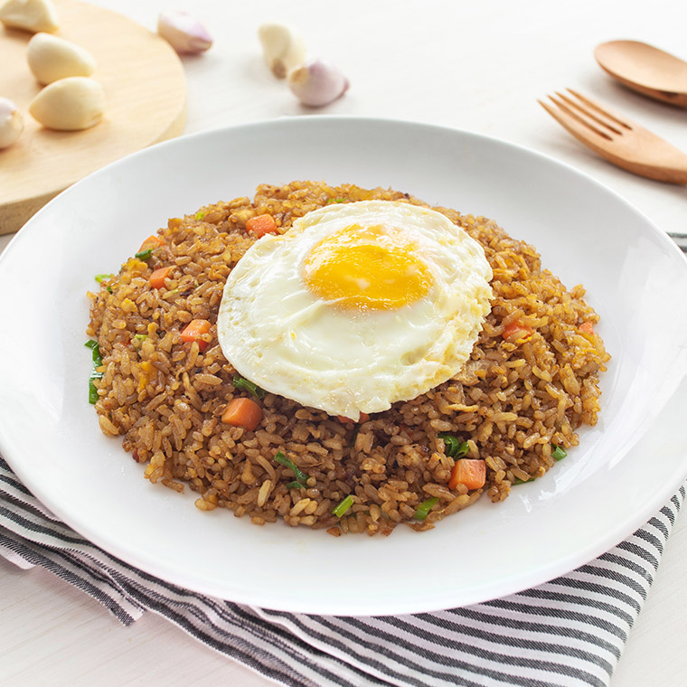

Nasi Goreng (Indonesian Fried Rice)

A traditional Indonesian food, all time favorite!
What else better than Nasi Goreng? Make your own now.
Taste great when served immediately, don't forget to use fine and fresh ingredients.
Ingredients
- Cooking spray
- 3 large eggs, beaten
- 1 tablespoon vegetable oil
- 1 onion, chopped
- 1 leek, chopped
- 2 green chile peppers, chopped
- 1 clove garlic, minced
- ½ pound skinless, boneless chicken breasts, cut into thin strips
- ½ pound peeled and deveined shrimp
- 1 teaspoon ground coriander
- 1 teaspoon ground cumin
- 3 cups cold cooked white rice
- 3 tablespoons kecap manis (sweet soy sauce)